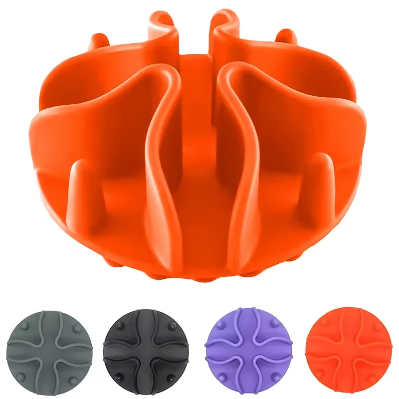
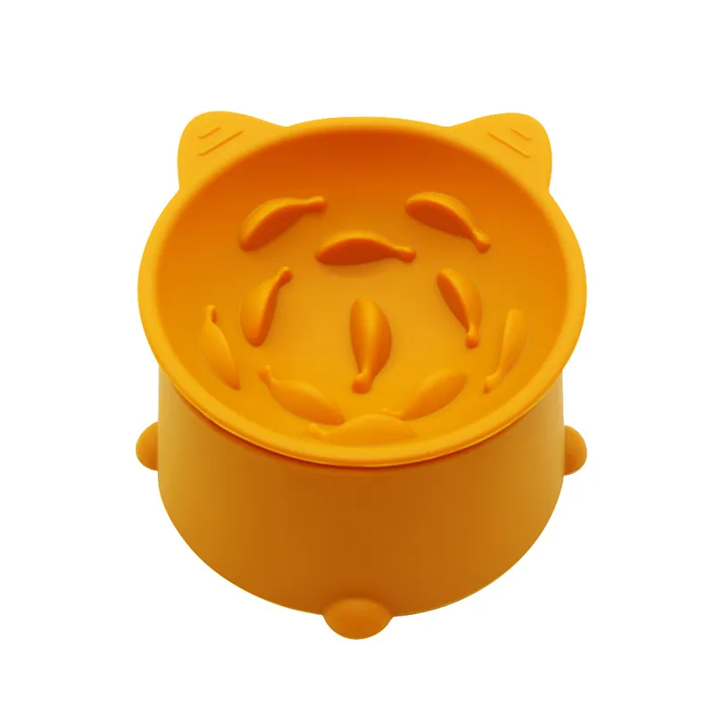

2-in-1 Slow Feeder Bowl & Lick Tray
342×177×68mm · Anti-spill tray · SKU LM-020
View ProductSilicone slow feeders for dogs — one-piece bowls with moulded mazes, and drop-in inserts that convert a bowl you already own. Both formats slow fast eaters without changing what the dog eats, and both are food-grade silicone tested to LFGB and FDA.
342×177×68mm · Anti-spill tray · SKU LM-020
View Product
L: Ø120mm, S: Ø80mm · 8 colors · SKU LM-017
View Product
Ø150 / Ø200 mm · 6 colours · SKU LM-016
View Product
S: 170g · L: 335g · 5 colors · Suction base · SKU DB-001
View Product
Folded 17 × 15.5 cm · 385 g · 5 colors · 2-in-1 slow feeder + water bowl · SKU DB-002
View Product
Ø175 / Ø160 mm · cut-to-fit insert · + frozen treat mold · 6 colors · SKU LM-021
View Product
120 × 120 × 45 mm · petal dividers · fits 4 bowl types · 4 colours · SKU DB-03
View Product
3 heights 87 / 96 / 105 mm · 10° tilt · 6 colours · SKU CB-001
View ProductSame material, different formats. Use this table to narrow the shortlist before opening a product page.
| Product | Size / weight | Format | Best for | Extras |
|---|---|---|---|---|
| 2-in-1 Slow Feeder Bowl & Lick Tray | 342 x 177 x 68 mm, 815 g | One-piece, silicone + Nylon + PC | Food and spreads in one bowl | 4 colours |
| Spiral Bowl & Ice Mold Set | 200 / 150 mm dia, 350 / 205 g | One-piece bowl + ice mold | Medium to large dogs; summer cooling | 6 colours |
| Paw Pattern Slow Feeder Bowl | 120 x 65 mm / 80 x 41 mm, 243 / 77.5 g | One-piece bowl | Small and medium dogs, kittens | 8 colours |
| Dog Licking Ball Slow Feeder Bowl | S / L, 170 / 335 g | Suction base, rolling ball core | Interactive slow feeding | 5 colours |
| 2-in-1 Foldable Slow Feeder Bowl | Open 38 x 15.5 x 4.5 cm, 385 g | Fold-flat, two compartments | Travel, outdoors, FBA test SKUs | 5 colours |
| Cut-to-Fit Slow Feeder Insert | 175 / 160 mm dia, 167 / 106 g | Trim to the bowl, drop in | Bowls of different diameters | Frozen treat mold, 6 colours |
| Drop-In Slow Feeder Bowl Insert | 120 x 120 x 45 mm, 98 g | Suction nubs, drop in | Bowls with inner base from about 125 mm | Petal dividers, 4 colours |
| Adjustable Height Silicone Cat Bowl | Bowl 140 mm dia, 87 / 96 / 105 mm set height, 406 g | Three-position base | Cats: kittens, adults and seniors | 10 degree tilt, fish ridges, 6 colours |
A dedicated bowl is the better first purchase for a customer buying new. An insert is the cheaper way to slow a bowl the customer already owns, so it suits accessory ranges and repeat buyers.
Measure the usable inner base, not the rim: inner diameter at the bottom, depth, and whether the wall is straight or tapered. The drop-in insert fits bowls from about 125 mm inner base; the cut-to-fit insert is trimmed to size for anything else.
The 200 mm spiral bowl and the 2-in-1 bowl and lick tray carry the most food; the licking ball bowl is for interactive feeding. For a dog that already has a bowl, the cut-to-fit insert is the cheaper route.
Yes. The 2-in-1 formats combine a slow feeder side with a lick tray for wet food and spreads.
Yes. Stock colours start at 10 pcs per SKU and mixed orders are quoted together with carton and shipping details. Send the SKU list, quantities and destination and we reply within 12 hours.
Tell us your target quantity, market and customization needs. We reply within 12 hours with pricing, MOQ and a sample arrangement.